Activities and Mass-Action Equations
In this section the activities of aqueous, exchange, and surface species are defined and the mass-action relations for each species are presented. Equations are derived from the mass-action expression for the moles of each species in the chemical system in terms of the master unknowns. These equations are then differentiated with respect to the master unknowns. Later, these equations for the moles of a species and the partial derivatives will be substituted into the constituent mole-balance, charge-balance, and phase-equilibria functions.
Aqueous Species
PHREEQC allows speciation or equilibration with respect to a single aqueous phase. However, multiple aqueous phases may be defined in the course of a run and an aqueous phase may be defined as a mixture of one or more aqueous phases (see
MIX keyword in "Description of Data Input"). The dissolved species in the aqueous phase are assumed to be in thermodynamic equilibrium, with one exception; in initial solution calculations, disequilibrium among valence states of redox elements is allowed. The unknowns for each aqueous species
i
are the activity,
a
i
, activity coefficient, 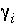
, molality,
m
i
, and moles in solution,
n
i
.
PHREEQC rewrites all chemical equations in terms of master species. There is one master aqueous species associated with each element (for example, Ca
+2
for calcium) or element valence state (for example, Fe
+3
for ferric iron) plus the activity of the hydrogen ion, the activity of the aqueous electron, and the activity of water. Some programs, for example MINTEQA2 (Allison and others, 1990) and MINEQL
+
(Schecher and McAvoy, 1991) use the term "component" for these species, but that terminology is not used here because of confusion with the definition of component for the Gibbs' phase rule. For PHREEQC, the identity of each aqueous master species is defined with
SOLUTION_MASTER_SPECIES data block (see "Description of Data Input"). The numerical method reduces the number of unknowns to be a minimum number of master unknowns, and iteratively refines the values of these master unknowns until a solution to the set of algebraic equations is found. The master unknowns for aqueous solutions are the natural log of the activities of master species, the natural log of the activity of water,  , the ionic strength, 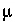
, and the mass of solvent water in an aqueous solution,
W
aq
.
, the ionic strength, 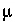
, and the mass of solvent water in an aqueous solution,
W
aq
.
The following relationships apply to all aqueous species (except aqueous electrons and water itself): 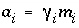
and 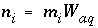
. Equilibrium among aqueous species in an ion-association model requires that all mass-action equations for aqueous species are satisfied. For example, the association reaction for the aqueous species 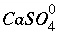
is  . The log
K
for this reaction at 25
o
C is 2.3, which results in the mass-action equation:
. The log
K
for this reaction at 25
o
C is 2.3, which results in the mass-action equation:
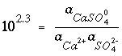
. (1)
In general, mass-action equations can be written as
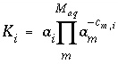
, (2)
where
K
i
is a temperature-dependent equilibrium constant,
c
m,i
is the stoichiometric coefficient of master species
m
in species
i
and  is the total number of aqueous master species. The values of
c
m,i
may be positive or negative. For PHREEQC, terms on the right-hand side of an association reaction are assigned negative coefficients and terms on the left-hand side are assigned positive coefficients. The same formalism applies to master species, where the
is the total number of aqueous master species. The values of
c
m,i
may be positive or negative. For PHREEQC, terms on the right-hand side of an association reaction are assigned negative coefficients and terms on the left-hand side are assigned positive coefficients. The same formalism applies to master species, where the
mass-action equation is simply 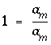
.
The total moles of an aqueous species
i
can be derived from the mass-action expression:
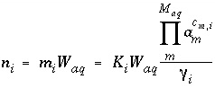
. (3)
The Newton-Raphson method uses the total derivative of moles with respect to the master unknowns. The total derivative is
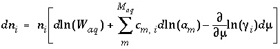
. (4)
Activity coefficients of aqueous species are defined with the Davies equation:
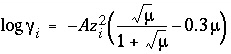
, (5)
or the extended or WATEQ Debye-Hückel equation:
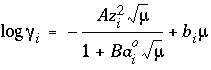
, (6)
where
z
i
is the ionic charge of aqueous species
i
, and
A
and
B
are constants dependent only on temperature. Equation 6 is the extended Debye-Hückel equation, if
b
i
is zero, or the WATEQ Debye-Hückel equation (see Truesdell and Jones, 1974), if
b
i
is not equal to zero. In the extended Debye-Hückel equation,  is the ion-size parameter, whereas in the WATEQ Debye-Hückel equation 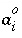
and
b
i
are ion-specific parameters fitted from mean-salt activity-coefficient data. Unless otherwise specified in the database file or the input data set, the Davies equation is used for charged species. For uncharged species, the first term of the activity coefficient equation is zero, and the WATEQ Debye-Hückel equation reduces to the Setchenow equation (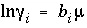
) (see Langmuir, 1997 for discussion). Unless otherwise specified,
b
i
is assumed to be 0.1 for all uncharged species.
is the ion-size parameter, whereas in the WATEQ Debye-Hückel equation 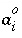
and
b
i
are ion-specific parameters fitted from mean-salt activity-coefficient data. Unless otherwise specified in the database file or the input data set, the Davies equation is used for charged species. For uncharged species, the first term of the activity coefficient equation is zero, and the WATEQ Debye-Hückel equation reduces to the Setchenow equation (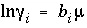
) (see Langmuir, 1997 for discussion). Unless otherwise specified,
b
i
is assumed to be 0.1 for all uncharged species.
The partial derivatives of these activity coefficient equations with respect to ionic strength are
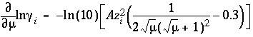
, (7)
for the Davies equation and
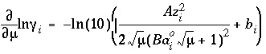
, (8)
for the extended or WATEQ Debye-Hückel equation.
For data input to PHREEQC, the chemical equation for the mole-balance and mass-action expressions, the log
K
and its temperature dependence, and the activity coefficient parameters for each aqueous species are defined through the
SOLUTION_SPECIES data block. Master species for elements and element valence states are defined with the
SOLUTION_MASTER_SPECIES data block. Composition of a solution is defined with the
SOLUTION or
SOLUTION_SPREAD data block (see "Description of Data Input").
Exchange Species
Ion-exchange equilibria are included in the model through heterogeneous mass-action equations and mole-balance equations for exchange sites. PHREEQC allows multiple exchangers, termed an "exchange assemblage", to exist in equilibrium with the aqueous phase. The approach uses mass-action expressions based on half-reactions between aqueous species and a fictive unoccupied exchange site (Appelo and Postma, 1993) for each exchanger. This unoccupied exchange site is the master species for the exchanger and the log of its activity is an additional master unknown. Its identity is defined with
EXCHANGE_MASTER_SPECIES data block (see "Description of Data Input"). However, the master species is not included in the mole-balance equation for the exchanger, forcing its physical concentration to be zero. Its activity is also physically meaningless, but is such that all of the exchange sites are filled by other exchange species.
The unknowns for exchange calculations are the activity, 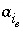
, which is defined to be the equivalent fraction in PHREEQC times an activity coefficient, 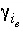
, and the moles,  , of each exchange species, 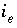
, of exchanger
e
. The equivalent fraction is the moles of sites occupied by an exchange species divided by the total number of exchange
, of each exchange species, 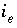
, of exchanger
e
. The equivalent fraction is the moles of sites occupied by an exchange species divided by the total number of exchange
sites. The activity of an exchange species is 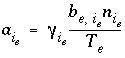
, where  is the number of equivalents of exchanger,
e
, occupied by the exchange species
is the number of equivalents of exchanger,
e
, occupied by the exchange species  , and
, and  is the total number of exchange sites for the exchanger, in equivalents. Note that
is the total number of exchange sites for the exchanger, in equivalents. Note that  is the total number of equivalents of the exchanger in the system, which is not necessarily equal to the number of equivalents per kilogram of water (eq/kgw) because the mass of water in the system may be more or less than 1 kg. By default, the activity coefficient for an exchange species is 1.0, but optionally, a Davies, extended Debye-Hückel, or WATEQ Debye-Hückel activity coefficient can be used, which is based on the aqueous ionic strength and the number of equivalents of exchange sites occupied by the exchange species.
is the total number of equivalents of the exchanger in the system, which is not necessarily equal to the number of equivalents per kilogram of water (eq/kgw) because the mass of water in the system may be more or less than 1 kg. By default, the activity coefficient for an exchange species is 1.0, but optionally, a Davies, extended Debye-Hückel, or WATEQ Debye-Hückel activity coefficient can be used, which is based on the aqueous ionic strength and the number of equivalents of exchange sites occupied by the exchange species.
Equilibrium among aqueous and exchange species requires that all mass-action equations for the exchange species are satisfied. The association reaction for the exchange species 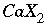
is  , where
, where  is the exchange master species for the default database. The use of equivalent fractions for activities and this form for the chemical reaction is known as the Gaines-Thomas convention (Gaines and Thomas, 1953) and is the convention used in the databases
phreeqc.dat
and
wateq4f.dat
, which are distributed with PHREEQC. [It is also possible to use the Gapon convention in PHREEQC, which also uses equivalent fraction, but writes the exchange reaction as 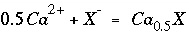
. See Appelo and Postma (1993) for more discussion.] The log
K
for calcium exchange in the default database file is 0.8, which results in the following mass-action equation:
is the exchange master species for the default database. The use of equivalent fractions for activities and this form for the chemical reaction is known as the Gaines-Thomas convention (Gaines and Thomas, 1953) and is the convention used in the databases
phreeqc.dat
and
wateq4f.dat
, which are distributed with PHREEQC. [It is also possible to use the Gapon convention in PHREEQC, which also uses equivalent fraction, but writes the exchange reaction as 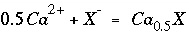
. See Appelo and Postma (1993) for more discussion.] The log
K
for calcium exchange in the default database file is 0.8, which results in the following mass-action equation:
 . (9)
. (9)
In general, mass-action equations can be written as
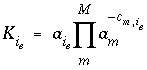
, (10)
where
m
varies over all master species, including exchange master species, 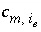
is the stoichiometric coefficient of master species,
m
, in the association half-reaction for exchange species
i
e
, and  is a half-reaction selectivity constant. The values of
is a half-reaction selectivity constant. The values of  may be positive or negative. For PHREEQC, terms on the right-hand side of an association reaction are assigned negative coefficients and terms on the left-hand side are assigned positive coefficients.
may be positive or negative. For PHREEQC, terms on the right-hand side of an association reaction are assigned negative coefficients and terms on the left-hand side are assigned positive coefficients.
For an exchange species, the equation for the total moles of species
i
e
is
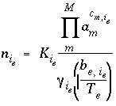
. (11)
The natural log of the activity of the master species of the exchanger is a master unknown in the numerical method. The total derivative of the moles of species
i
e
with respect to the master unknowns is
 . (12)
. (12)
For data input to PHREEQC, the chemical equation for the mole-balance and mass-action expressions, the log
K
and its temperature dependence, and, optionally, the activity-coefficient expression for each exchange species are defined through the
EXCHANGE_SPECIES data block. Exchange master species are defined with the
EXCHANGE_MASTER_SPECIES data block. The number of exchange sites and exchanger composition are defined with the
EXCHANGE data block (see "Description of Data Input").
Surface Species
Surface-complexation processes are included in the model through heterogeneous mass-action equations, mole-balance equations for surface sites, and charge-potential relations for each surface. PHREEQC allows multiple surfaces and surface-site types, termed a "surface assemblage", to exist in equilibrium with the aqueous phase. Two formulations of the mass-action equations for surface species are available in PHREEQC: (1) one that includes electrostatic potential terms and (2) another that excludes all electrostatic potential terms. If the Dzombak and Morel (1990) model, which includes electrostatic potential terms, is used, additional equations and mass-action terms become operational because of surface charge and surface electrostatic potential.
The two principle differences between the formulation of exchange reactions and surface reactions are that exchange reactions are formulated as half-reactions, which causes the master species not to appear in any mole-balance equations, and the exchange species are expected to be neutral. Surface reactions are not half-reactions, so the master species is a physically real species and appears in mole-balance equations, and surface species may be anionic, cationic, or neutral.
The basic theory for surface-complexation reactions including electrostatic potentials is presented in Dzombak and Morel (1990). The theory assumes that the number of active sites,
T
s
(eq), the specific area,
A
s
(m
2
/g), and the mass,
S
s
(g), of the surface are known. The two additional master unknowns are (1) the quantity, 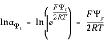
, where
F
is the Faraday constant (96493.5 J V
-1
eq
-1
),  is the potential at surfaces (volts),
R
is the gas constant (8.3147 J mol
-1
K
-1
), and
T
is temperature (Kelvin) and (2) the natural log of the activity of the master surface species. Note that the quantity 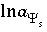
is defined with a 2 in the denominator of the term on the right-hand side. This is a different master unknown than that used in Dzombak and Morel (1990), but produces the same results as their model because all equations are written to be consistent with this master unknown.
is the potential at surfaces (volts),
R
is the gas constant (8.3147 J mol
-1
K
-1
), and
T
is temperature (Kelvin) and (2) the natural log of the activity of the master surface species. Note that the quantity 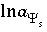
is defined with a 2 in the denominator of the term on the right-hand side. This is a different master unknown than that used in Dzombak and Morel (1990), but produces the same results as their model because all equations are written to be consistent with this master unknown.
The activity of a surface species is assumed to be equal to the mole fraction of a given surface-site type that is occupied. In other words, a surface species is in the standard state (has activity of 1) when it completely covers a given kind of surface site. This convention differs from Dzombak and Morel (1990) who assumed that activity of a surface species (conceptually in the solid phase) is numerically equal to molarity (concentration in solution). If only monodentate complexes are considered (as is done by Dzombak and Morel, 1990), terms cancel in the mass-action equation and identical numerical results are obtained irrespective of the convention for standard state. However, a notable difference in surface site concentration exists when the molarity convention is used for multidentate complexes (bidentate, tridentate, and others, cf. Appelo and Postma, 1999). If a vessel contains a solution in equilibrium with a surface containing multidentate species, and more of exactly the same solution is added, the composition of solution and surface would change with the molarity convention. The molarity convention is clearly not correct in this case.
"
Hfo
" (
H
ydrous
f
erric
o
xide) is used in the default database files with "_w", which indicates a low affinity or weak site and "_s", which indicates a high affinity or strong site. "
Hfo_wOH
" is used to represent a neutral surface species at a weak site and the association reaction for the formation of a negatively charged weak site (it is an association reaction in the sense that the defined species is on the right hand side of the equation) can be written as
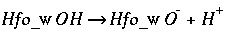
. (13)
The mass-action expression, which includes the electrostatic potential term, is
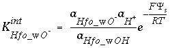
, (14)
where 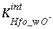
is the intrinsic equilibrium constant for the reaction, and 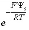
is a factor that accounts for the work involved in moving a charged species (H
+
) away from a charged surface. In general, the mass-action equation for surface species 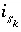
is
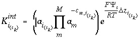
(15)
where  , is the intrinsic equilibrium constant;
, is the intrinsic equilibrium constant;  is the
i
th
surface species for surface-site type
k
(weak or strong in Dzombak and Morell, 1990) in surface
s
;
m
varies over all master species,
M
, including surface master species; 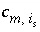
is the stoichiometric coefficient of master species,
m
, in the association reaction for surface species
is the
i
th
surface species for surface-site type
k
(weak or strong in Dzombak and Morell, 1990) in surface
s
;
m
varies over all master species,
M
, including surface master species; 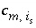
is the stoichiometric coefficient of master species,
m
, in the association reaction for surface species  , and 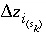
is the net change in surface charge due to the formation of the surface species. The values of 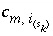
may be positive or negative. For PHREEQC, terms on the right-hand side of an association reaction are assigned negative coefficients and terms on the left-hand side are assigned positive coefficients.
, and 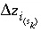
is the net change in surface charge due to the formation of the surface species. The values of 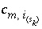
may be positive or negative. For PHREEQC, terms on the right-hand side of an association reaction are assigned negative coefficients and terms on the left-hand side are assigned positive coefficients.
For a surface species, the equation for the total moles of species 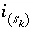
is
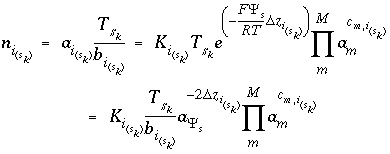
, (16)
where  is the total number of a type of surface site, and 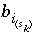
is the number of surface sites bounded to the spe-
is the total number of a type of surface site, and 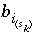
is the number of surface sites bounded to the spe-
cies. The total derivative of the moles of species  with respect to the master unknowns is
with respect to the master unknowns is
 . (17)
. (17)
The second formulation of mass-action equations for surface species excludes the electrostatic potential term in the mass-action expression (
-no_edl identifier in the
SURFACE data block). The equation for the moles of a surface species is the same as equation 16, except the factor involving 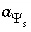
does not appear. Likewise, the total derivative of the moles is the same as equation 17, except the final term is absent.
For data input to PHREEQC, the chemical equation for the mole-balance and mass-action expressions and the log
K
and its temperature dependence of surface species are defined through the
SURFACE_SPECIES data block. Surface master species or types of surface sites are defined with the
SURFACE_MASTER_SPECIES data block. The identity of the surfaces and the number of equivalents of each site type, the composition of the surface, the specific surface area, and the mass of the surface are defined with the
SURFACE data block (see "Description of Data Input").
Gas-Phase Components
Equilibrium between a multicomponent gas phase and the aqueous phase is modeled with heterogeneous mass-action equations and an equation for total pressure (fixed-pressure gas phase only). Only one gas phase can exist in equilibrium with the aqueous phase, but the gas phase may contain multiple components. All gas components are assumed to behave ideally and the gas phase is assumed to be an ideal mixture of gas components.
If a gas phase is specified to have a fixed volume, then the pressure in the gas volume will vary with reaction extent, but each gas component will always be present in the gas phase. For a fixed-volume gas phase, no additional master unknowns are needed, and the moles of a component in the gas phase can be calculated from the activities of the aqueous master species.
If a gas phase is specified to have a fixed pressure, the gas phase is a fixed-pressure bubble that will vary in volume with reaction extent. If the sum of the partial pressures of the component gases is less than the specified total pressure, the fixed-pressure gas phase will not exist and none of the gas components will be present in the gas phase. For a fixed-pressure gas phase, one additional master unknown is included in the equations, which is the total moles of gas components in the gas phase,
N
gas
.
By the assumption of ideality, the fugacity (activity) of a gas component is equal to its partial pressure. PHREEQC uses dissolution equations, in the sense that the gas component is assumed to be on the left-hand side of the chemical reaction. For carbon dioxide, the dissolution reaction may be written as
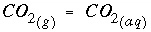
. (18)
The Henry's law constant relates the partial pressure of the gas component (numerically equal to fugacity for ideal gases) to the activity of aqueous species. For carbon dioxide, the Henry's law constant is 10
-1.468
[following the ideal gas assumption, units are atmospheres (atm)], and the following mass-action equation applies at equilibrium:
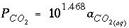
, (19)
where 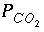
is the partial pressure (atm) calculated using activities in the aqueous phase. In general, the partial pressure of a gas component may be written in terms of aqueous phase activities as
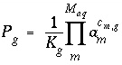
, (20)
where 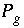
is the partial pressure of gas component
g
, calculated using activities in the aqueous phase;  is the Henry's law constant for the gas component; and 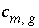
is the stoichiometric coefficient of aqueous master species,
m
, in the dissolution equation. The values of
is the Henry's law constant for the gas component; and 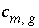
is the stoichiometric coefficient of aqueous master species,
m
, in the dissolution equation. The values of  may be positive or negative. For PHREEQC, terms on the left-hand side of a dissolution reaction are assigned negative coefficients and terms on the right-hand side are assigned positive coefficients.
may be positive or negative. For PHREEQC, terms on the left-hand side of a dissolution reaction are assigned negative coefficients and terms on the right-hand side are assigned positive coefficients.
For a fixed-volume gas phase, the total volume of the gas phase is specified to be
V
total
, but the pressure of the gas phase is variable. At equilibrium, the number of moles of a gas component in the gas  is calculated as
is calculated as
 . (21)
. (21)
The total derivative of the moles of a gas component in the gas phase is
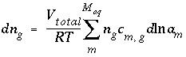
. (22)
For a fixed-pressure gas phase, the total pressure is specified as
P
total
, but the volume of the gas phase is variable. At equilibrium, the number of moles of a gas component in the gas phase is equal to the fraction of the total pressure for the gas times the total moles of gas in the gas phase:
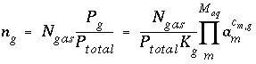
. (23)
The total derivative of the moles of a gas component in the gas phase is
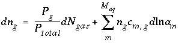
. (24)
For data input to PHREEQC, the mass-action equations, Henry's law constant, and temperature dependence of the constant are defined with the
PHASES data block. The type of gas phase (fixed-volume or fixed-pressure), the components to include in gas-phase calculations, and initial gas-phase composition are defined with the
GAS_PHASE data block (see "Description of Data Input").
| Next|| Previous || Top |